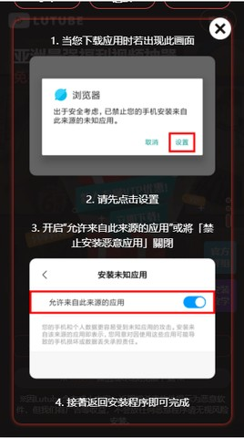
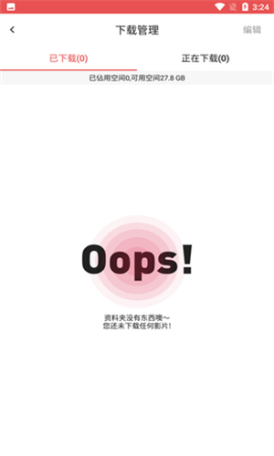

lutube 从零用到上手：安装、搜片、缓存一条龙
第一次接触 lutube 不知道从哪下手？这篇教程带你从安装到缓存，把最常用的几个操作走一遍，新手也能看完就上手。
读完这篇教程，你就能独立完成 lutube 的安装、绑定账号、关键词搜片、播放切换线路和离线缓存这五件事——日常看片够用了。
准备：你需要知道的几件事
lutube官网上介绍它是一款面向 Android 设备的影视观看应用，本体体积不到 30 MB，对设备配置没什么硬要求。安装包不在手机自带应用商店里，需要手动开启"未知来源"权限再装。整个过程十分钟以内，跟着做就行。
先做两件前置：
- 安装包从官方下载获取最新版本；
- 确认设备存储空间至少腾出 2 GB 以上——应用本体很小，但缓存影片会吃空间，后面会讲到怎么查看和管理。
如果设备之前没装过非商店应用，系统会弹"是否允许安装未知来源应用"的询问，这是正常流程，勾上就好。

第一步：安装并绑定账号
打开安装包按提示完成安装，首次启动会直接进主界面。这里别急着搜片，第一件事是绑定手机号。
为什么这么急？这款应用的账号跟着安装走——卸载重装、升级版本，系统都可能分配新账号。没绑定的话，旧账号里的收藏和会员就悬了。绑定手机不仅能保住数据，还会立即送 VIP，是整个应用里性价比最高的一步操作。
操作路径很简单：
- 底部标签切到「会员」；
- 往下滑找到「绑定账号」一栏，点进去；
- 输入手机号，按提示完成验证码验证；
- 返回会员页，核对 VIP 标识是否到账。
绑定完成后，后面更新版本或者换机都有得找。

第二步：用关键词搜片
应用的主逻辑就是「先搜后看」，搜索比翻列表优先级更高。四个搜得准的技巧记一下：
- 用片名核心词，别带定语——搜「甄嬛」比「电视剧甄嬛传全集」命中率高得多；
- 记不全片名就搜特征：主角名、别名、简称都值得试一轮；
- 换个写法再搜一次：中英文、简繁、有无空格，各试一遍；
- 结果太杂就加类型词：片名 + 类型组合能过滤掉同名内容。
搜到结果后，先扫一眼线路数量——线路多的片子卡了随时能换。这次不打算立刻看的，点收藏就行，下次进收藏列表继续。
第三步：播放卡顿怎么排查
播放转圈放不出来别乱试，按这个四级顺序走，每级只做一件事，八成问题在前两级就解决了：
- 换一部片子——能放就是这部片的片源问题，回到原片换线路；
- 换线路——同片其他线路顺畅，就是原线路拥堵；
- Wi-Fi 和流量互切一次——哪边好留在哪边；
- 清后台重进——设备资源紧张时这一步有用。
两个容易忽略的点：首屏加载速度快不代表线路持续稳定，判断线路好坏要看"放着放着卡不卡"；晚高峰同一线路明显变卡是正常现象，黄金时段看片的用户建议把缓存离线当成主力方式。线路切换的更多参数和技巧，在lutube文档里有详细说明。
第四步：缓存离线与空间管理
想离线看的话，在搜索结果或播放页直接发起缓存就行。缓存前先确认剩余空间——路径是「会员 → 下载管理」，页面首就显示设备剩余可用空间。
缓存占用的主要是影片文件，大小等于片长乘以清晰度：同一段内容，高清档可能是标清档的两三倍。看完及时清理，或者确实想留的片子删掉高清换标清重存，这两步通常就能回收大半空间。

日常使用习惯对应建议空间：每天缓存两三集看完即删的，2~4 GB 足够；一次缓存一整部剧的，标清档建议 8 GB 起步；高清囤片党最好留 16 GB 以上。
常见卡点速查
搜不到想看的片子怎么办？ 先确认没打错别字，换核心词重搜一遍；还不行就到「分类」里按类型翻，可能它在但名字和你记的不一样；最后过段时间再试——片库内容随版本和运营调整，今天没有不代表以后没有。
绑定入口找不到？ 底部切「会员」标签，往下滑，页面中间偏上的位置就是「绑定账号」一栏，不会藏得太深。
缓存到一半失败？ 先去下载管理页看剩余空间是否足够，不够的话清理看完的缓存再重试。
往下还能玩什么
线路切换的具体参数、会员攒积分的完整途径、收藏的多设备同步——这些进阶玩法等你把以上四步用熟了再慢慢摸。开源资料在多个仓库都有备份：GitHub 是主仓，Gitee 国内访问更顺，GitCode 也有同步。